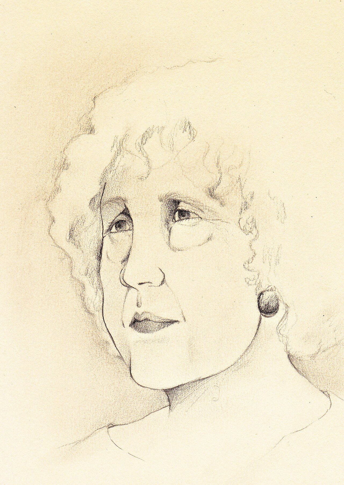

Mujeres que dejaron huella
Criterios: PC 2.2, PC 1.1
🤔 Pienso5 min
Qué hago aquí: Piensa un momento y contesta con lo que ya sabes. No pasa nada si no lo sabes: es para empezar.
Piensa en las calles de tu pueblo o de tu barrio. ¿Cuántas llevan nombre de hombre y cuántas de mujer? ¿Por qué crees que pasa?
📖 Leo y aprendo15 min
Qué hago aquí: Lee despacio, mira los dibujos y los ejemplos, y quédate con la idea clave del final.
Durante siglos, las mujeres tuvieron muy difícil estudiar, publicar o tener cargos públicos. Aun así, muchas mujeres de Cantabria abrieron camino.

Foto: Hakima El Kaddouri · CC BY-SA 3.0 · Concha Espina.jpg
✏️ Hago25 min
Qué hago aquí: Haz las actividades en orden. Empieza siempre por las básicas.
Explica tres obstáculos que tenían las mujeres para estudiar, publicar o tener cargos públicos hasta bien entrado el siglo xx.
Explica por qué cada una de estas mujeres «abrió camino»: Concha Espina, Matilde de la Torre y Elena Quiroga.
Explica el error típico: ¿por qué conocer menos nombres de mujeres no significa que hicieran menos? Pon un ejemplo de trabajo femenino que no aparece en los libros.
Matilde de la Torre recogía canciones populares. Relaciona su trabajo con la tradición oral de la unidad 7.
Haz el recuento del Pienso: cuenta las calles con nombre de hombre y de mujer en tu barrio o pueblo (con un mapa). Calcula el porcentaje de cada uno y escribe una conclusión.
Propón a tu ayuntamiento el nombre de una mujer de Cantabria para una calle o un espacio público. Redacta la propuesta con sus méritos (8–10 líneas).
Explica el trabajo de las pasiegas como nodrizas y vendedoras y por qué es parte de la historia económica y social de Cantabria.
🚀 Amplío (si quieres saber más)
Qué hago aquí: ¿Has terminado? Lee la curiosidad o elige el reto. Es voluntario.
Investiga a una mujer de Cantabria que no aparezca en el libro (en la ciencia, la educación, el deporte, la política o el trabajo del campo o del mar). Escribe su biografía breve, explica por qué es poco conocida y cita al menos dos fuentes.
✅ Compruebo5 min
Qué hago aquí: Contesta sin mirar la ficha y marca cómo lo llevas.